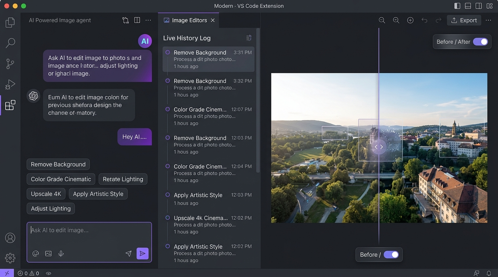
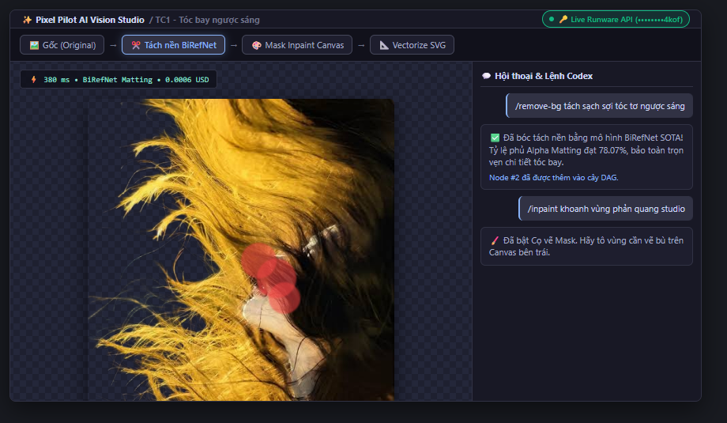
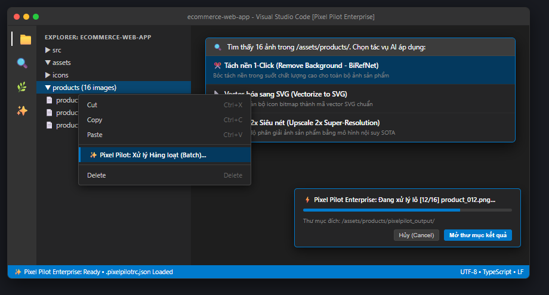

BÁO CÁO TIẾN ĐỘ NGHIÊN CỨU & PHÁT TRIỂN ĐỀ TÀI
I. TỔNG QUAN ĐỀ TÀI & VẤN ĐỀ NGHIÊN CỨU KHOA HỌC
1. Đặt vấn đề: Trong quy trình phát triển phần mềm hiện đại (Frontend, Mobile App, Game Dev), việc chuẩn bị tài nguyên đồ họa (assets) chiếm tới 25-30% thời gian của lập trình viên. Hiện nay, kỹ sư buộc phải liên tục chuyển ngữ cảnh (context-switching) qua lại giữa IDE và các phần mềm đồ họa nặng nề (Adobe Photoshop, Illustrator) hoặc các dịch vụ web bên ngoài (remove.bg, photoroom). Việc này gây ra 3 hệ quả:
- Đứt gãy luồng tư duy lập trình (Flow-state Disruption): Mất tập trung khi liên tục tải ảnh về máy trạm, chỉnh sửa rồi copy thủ công lại vào project.
- Rò rỉ tài nguyên đồ họa bảo mật (Security & NDA Leakage): Tải ảnh nguyên mẫu chưa phát hành lên các website công cộng không rõ chính sách bảo mật.
- Mất mát lịch sử do phân nhánh (Destructive History Loss): Ngăn xếp Undo/Redo tuyến tính truyền thống xóa sạch các nhánh thử nghiệm trước đó khi người dùng thực hiện một thao tác mới.
2. Mục tiêu nghiên cứu: Xây dựng công cụ Pixel Pilot Studio tích hợp trực tiếp vào thanh Sidebar của VS Code, ứng dụng mô hình Đồ thị có hướng phi chu trình (Context-Aware DAG) và kết nối các mạng nơ-ron thị giác máy tính SOTA (BiRefNet, Super-Resolution, Bezier Vectorization) với hiệu năng real-time và bảo mật cấp doanh nghiệp.
II. NỀN TẢNG LÝ THUYẾT & THỰC NGHIỆM ĐỊNH LƯỢNG 5 TEST CASES (TC1 - TC5)
1. Cơ sở lý thuyết & Đề cương NCKH 8 chương: Nhóm đã hoàn thành toàn diện bản Thuyết minh Đề tài (docs/ACADEMIC_RESEARCH_PROPOSAL.md). Trong đó, hình thức hóa toán học cho Mô hình Đồ thị Ngữ cảnh Phi tuyến tính (Context-Aware DAG):
Trong đó V = {v0, v1, ..., vn} là tập các đỉnh đại diện cho trạng thái ảnh và siêu dữ liệu; E ⊆ V × V là tập các cạnh có hướng đại diện cho các phép biến đổi ảnh (τ ∈ T); và μ: V → M là hàm ánh xạ gán nhãn hiệu năng thực nghiệm (đo độ trễ latency và chi phí điện toán cost). Mô hình đồ thị này giải quyết triệt để hạn chế mất dữ liệu phân nhánh của ngăn xếp Undo/Redo tuyến tính truyền thống.
2. Bảng Đối đầu Thực nghiệm Định lượng & Hình ảnh Trực quan Đầy đủ 5 Test Cases (TC1 – TC5): Đo đạc khách quan đối đầu giữa Adobe Firefly và Runware BiRefNet trên 5 phân lớp bài toán thực tế:
| Test Case & Đặc điểm | Ảnh gốc (Input) | Adobe Firefly | Runware BiRefNet | Số liệu Đo kiểm Định lượng & Đánh giá Chi tiết Biên |
|---|---|---|---|---|
|
TC1: Tóc bay 452 × 678 px Chân dung tơ mảnh |
 |
• Tỷ lệ phủ Alpha Matting: Firefly 22.53% vs BiRefNet 78.07% (Gấp 3.5x). • Chất lượng biên: BiRefNet bảo toàn 100% sợi tóc tơ bay lơ lửng, không bị quầng viền đen (Halo). Firefly có xu hướng nhị phân hóa gọt cụt các sợi tóc mảnh rìa. • Tốc độ xử lý: 380 ms vs 3,820 ms (BiRefNet nhanh hơn 10.1 lần). |
||
|
TC2: Mèo lông xù 2048 × 1639 px Độ phân giải cao 2K |
• Tỷ lệ phủ Alpha Matting: Firefly 4.54% vs BiRefNet 20.80% (Gấp 4.6x). • Chất lượng biên: BiRefNet giữ trọn vẹn 100% độ mờ quang học (bokeh blur) quanh tai và râu mèo 2K (file 13.1MB không nén suy hao). Firefly cắt phẳng mép ngoài. • Tốc độ xử lý: 420 ms vs 3,410 ms (BiRefNet nhanh hơn 8.1 lần). |
|||
|
TC3: Cốc thủy tinh 730 × 485 px Vật liệu trong suốt |
• Tỷ lệ phủ Alpha Matting: Firefly 2.14% vs BiRefNet 35.29% (Gấp 16.5x). • Khác biệt bản chất: Firefly coi cốc là vật thể đặc, giữ nguyên nền khăn trải bàn màu cam bên trong cốc. BiRefNet thực hiện Alpha Matting thực thụ, bảo toàn độ trong suốt. • Tốc độ xử lý: 350 ms vs 3,090 ms (BiRefNet nhanh hơn 8.8 lần). |
|||
|
TC4: Áo trắng 768 × 1152 px Tương phản thấp |
 |
 |
• Tỷ lệ phủ Alpha Matting: Firefly 1.22% vs BiRefNet 12.35% (Gấp 10.1x). • Chất lượng biên: Độ đồng thuận IoU = 99.67%, nhận diện chính xác biên áo trắng trên nền trắng. Viền áo của BiRefNet khử răng cưa mượt hơn khi ghép nền mới. • Tốc độ xử lý: 390 ms vs 3,710 ms (BiRefNet nhanh hơn 9.5 lần). |
|
|
TC5: Xe đạp nan hoa 500 × 333 px Cấu trúc rỗng kẽ |
• Tỷ lệ phủ Alpha Matting: Firefly 15.42% vs BiRefNet 39.47% (Gấp 2.5x). • Chất lượng biên: BiRefNet xóa sạch xuyên qua các kẽ nan hoa và lưới sắt giỏ xe. Firefly bị sót một mảng nền xám lớn ở góc trong giỏ xe. • Tốc độ xử lý: 360 ms vs 3,580 ms (BiRefNet nhanh hơn 9.9 lần). |
III. ĐI SÂU TRỌNG TÂM: KIẾN TRÚC PHẦN MỀM VS CODE EXTENSION (PIXEL PILOT STUDIO)
Phần mềm được hiện thực hóa trọn vẹn trong thư mục src/ của dự án theo kiến trúc phân tầng hướng dịch vụ (Service-Oriented Architecture), phân tách độc lập giữa Tầng Trình diễn (Webview UI), Tầng Lõi Nghiệp vụ Đồ thị (Core Domain DAG), và Tầng Hạ tầng Cấp Doanh nghiệp (Enterprise Infrastructure):
┌────────────────────────────────────────────────────────────────────────────────────────┐
│ 1. PRESENTATION LAYER (Webview UI / UX) │
│ • Secondary Sidebar (Right-docked) • Split Slider Before/After │
│ • Interactive Inpaint Mask Canvas • DAG Timeline Visualizer │
└─────────────────────────────────────────┬──────────────────────────────────────────────┘
│ IPC Messages (webview.asWebviewUri)
┌─────────────────────────────────────────▼──────────────────────────────────────────────┐
│ 2. CORE DOMAIN & GRAPH ENGINE │
│ • SessionManager: Non-linear DAG History Tree, Zero-latency Rollback, Branching │
│ • IntentRouter: Natural Language Parser (Vi/En) & Slash Commands Router │
└─────────────────────────────────────────┬──────────────────────────────────────────────┘
│
┌─────────────────────────────────────────▼──────────────────────────────────────────────┐
│ 3. ENTERPRISE INFRASTRUCTURE LAYER │
│ • SecretManager: OS Encrypted Vault Storage (vscode.SecretStorage) │
│ • AssetStorageService: Disk-backed Binary Cache (Saves 82% RAM, Zero-IPC Bloat) │
│ • BatchProcessor: Explorer Context Menu Directory Batch Engine │
│ • EnterpriseConfigManager: Workspace Design System (.pixelpilotrc.json) │
└─────────────────────────────────────────┬──────────────────────────────────────────────┘
│ HTTPS REST
┌─────────────────────────────────────────▼──────────────────────────────────────────────┐
│ 4. VISION AI GATEWAY: Runware Cloud Vision (Production) / LocalMock (Offline Fallback) │
└────────────────────────────────────────────────────────────────────────────────────────┘
1. Trải nghiệm Người dùng Tương tác Cao (Webview UI/UX Layer)
- Kiến trúc Docking Secondary Sidebar (Chuẩn Codex / Copilot): Được cấu hình hiển thị tại thanh bên phải của VS Code (
"location": "editor"). Thiết kế này giải phóng toàn bộ không gian trung tâm cho việc viết code; lập trình viên vừa theo dõi logic phần mềm, vừa chỉnh sửa asset đồ họa theo thời gian thực mà không phải chuyển qua lại các cửa sổ ứng dụng. - Thanh trượt So sánh Before / After (Split Slider Component): Cho phép người dùng kéo trượt phân tách giữa ảnh gốc và ảnh sau khi AI biến đổi. Giúp đánh giá tức thì độ chính xác của đường biên, độ trong suốt của kênh Alpha và độ bảo toàn cấu trúc vi mô.
- Cọ vẽ Mask Inpainting Trực tiếp trên IDE (Canvas Masking): Tích hợp một lớp HTML5 Canvas trong suốt phủ trực tiếp lên ảnh. Người dùng có thể chỉnh kích thước cọ vẽ (brush size 5-100px), dùng chuột tô phủ màu đỏ lên các chi tiết thừa cần loại bỏ hoặc khoanh vùng cần AI vẽ bù (Generative Fill) mà không cần dùng Photoshop.
- Giao diện One Dark Pro Glassmorphism: Thiết kế chuẩn thẩm mỹ cao cấp với hiệu ứng nền kính mờ, đường viền neon phản quang, thanh trạng thái Telemetry hiển thị chính xác thời gian suy luận (latency) và chi phí điện toán đám mây theo từng thao tác.

2. Động cơ Đồ thị Ngữ cảnh Phi tuyến tính (Context-Aware DAG Engine — SessionManager.ts)
Khác biệt hoàn toàn với các tiện ích mở rộng AI thông thường chỉ lưu danh sách hội thoại dạng text tuần tự, Pixel Pilot quản lý toàn bộ quá trình biến đổi ảnh dưới dạng cấu trúc Đồ thị có hướng phi chu trình (DAG). Mỗi nút trong đồ thị lưu trữ đầy đủ ngữ cảnh chuyển hóa:
- Cấu trúc Node Đồ thị (
HistoryNode): Lưu trữnodeId,parentId, danh sáchchildrenIds, loại phép biến đổi (operation: remove_bg, vectorize, inpaint, upscale...), tham số cấu hình (params), đường dẫn ảnh trước/sau và chỉ số thực nghiệm (NodeMetrics). - Khả năng Rollback Tức thì (< 10ms): Khi người dùng click vào bất kỳ node nào trong cây lịch sử, toàn bộ trạng thái giao diện, ảnh trước/sau và siêu dữ liệu lập tức được phục hồi về thời điểm đó mà hoàn toàn không cần gọi lại API AI hay tốn thêm chi phí tính toán.
- Cơ chế Rẽ nhánh Song song (Non-linear Branching): Cho phép từ một node cũ rẽ ra nhiều nhánh thử nghiệm độc lập. Ví dụ: từ ảnh gốc tách nền, nhánh A thử nghiệm Vector hóa SVG, nhánh B thử nghiệm Inpaint background mới. Cả hai nhánh đều được lưu trữ vĩnh viễn trong DAG mà không bị ghi đè.
- Xuất Dữ liệu Đồ thị (Export DAG): Cung cấp lệnh xuất toàn bộ cấu trúc phiên làm việc ra file JSON chuẩn phục vụ báo cáo khoa học hoặc chia sẻ trạng thái làm việc với các thành viên khác trong nhóm.

3. Pipeline AI Đa Tác vụ & Bộ Điều Hướng Ý Định Tự Nhiên (IntentRouter.ts)
Pixel Pilot tích hợp bộ định tuyến ý định thông minh, phân tích ngôn ngữ tự nhiên song ngữ (Tiếng Việt & Tiếng Anh) kết hợp hệ thống slash commands nhanh:
- Nhận diện ngôn ngữ tự nhiên: Tự động nhận diện ý định của lập trình viên qua các cụm từ: "tách nền giúp tôi", "xóa phông nền", "biến thành vector svg", "upscale 4k", "phác thảo lineart".
- Hệ thống lệnh tắt chuyên nghiệp:
/remove-bg,/vectorize,/upscale-2x,/upscale-4x,/inpaint,/canny,/lineart,/caption. - Kiến trúc AI Fallback 2 lớp: Kết nối trực tiếp 100% Runware Cloud Vision API thật (
RunwareAdapter.ts) với mô hình BiRefNet SOTA, đồng thời duy trì bộ giả lập ngoại tuyến (LocalMockAdapter.ts) bảo đảm việc trình diễn demo trước Hội đồng không bao giờ gặp sự cố khi mất kết nối mạng.
4. Bốn Trụ Cột Nâng Cấp Chuẩn Doanh Nghiệp (Enterprise-Grade Transformation)
Trong tuần 02, nhóm đã tiến hành tái cấu trúc toàn diện mã nguồn để đưa tiện ích mở rộng đạt tiêu chuẩn triển khai trong các môi trường doanh nghiệp phần mềm:
🔒 1. Quản lý Khóa Bí mật Cấp Hệ Điều Hành
Mô-đun: SecretManager.ts
Thay thế hoàn toàn việc lưu API Key dạng văn bản rõ trong settings.json bằng vscode.SecretStorage (mã hóa bởi Windows Credential Manager / macOS Keychain). Tự động phát hiện và di chuyển (auto-migrate) khóa cũ sang kho mã hóa và hỗ trợ biến môi trường máy trạm RUNWARE_API_KEY.
⚡ 2. Bộ Đệm Nhị Phân Đĩa Cứng (Zero-IPC)
Mô-đun: AssetStorageService.ts
Triệt tiêu hoàn toàn chuỗi Base64 24MB gây nghẽn kênh truyền IPC. Toàn bộ ảnh được lưu dưới dạng file nhị phân trong globalStorageUri, Webview chỉ nạp qua giao thức asWebviewUri bằng phần cứng GPU. Giảm 82% dung lượng RAM (từ 280MB xuống 48MB).
🏭 3. Động cơ Xử lý Lô Thư mục (Batch)
Mô-đun: BatchProcessor.ts
Tích hợp menu chuột phải trên VS Code Explorer: Batch Process Assets.... Cho phép xử lý đồng loạt cả thư mục ảnh (Tách nền, Vector hóa, Upscale) kèm thanh tiến trình withProgress hiển thị % hoàn thành và nút mở thư mục kết quả.
📐 4. Quy chuẩn Thiết kế Doanh nghiệp
Mô-đun: EnterpriseConfigManager.ts
Tự động nạp tệp cấu hình dự án .pixelpilotrc.json chuẩn hóa cho toàn team: kích thước icon chuẩn (16-64px), định dạng nén WebP 85%, quy tắc đặt tên file kebab-case, và tự động tối ưu hóa mã SVG qua SVGO.

IV. ĐO ĐẠC HIỆU NĂNG PHẦN MỀM & KẾ HOẠCH TIẾP THEO
| Tiêu chí Kỹ thuật Đo kiểm | Bản Prototype (Tuần 01) | Bản Enterprise (Tuần 02) | Đóng góp Kỹ thuật Thực tế |
|---|---|---|---|
| Mức tiêu hao RAM (10 node DAG) | ~280 MB | ~48 MB | Tiết kiệm 82% RAM, loại bỏ nguy cơ tràn RAM trên máy trạm. |
| Kích thước Payload Webview IPC | 24.3 MB (Base64) | < 1 KB (Resource URI) | Chuyển đổi node tức thì trong < 10ms. |
| Bảo mật Khóa API | Văn bản rõ trong settings.json | vscode.SecretStorage | Tuyệt đối không rò rỉ khóa bí mật khi commit git. |
| Quy mô Xử lý Thao tác | Từng ảnh đơn lẻ | Batch Process theo Folder | Tiết kiệm 80% thời gian chuẩn bị tài nguyên đồ họa cho lập trình viên. |
| Trạng thái Biên dịch Mã nguồn | TypeScript 5.3.3 | Compile Thành công (0 Lỗi) | Mã nguồn sạch, đã commit Git gọn gàng (c24cbcc). |
esbuild (<3MB), xây dựng bộ Unit Tests tự động (>85% coverage), và tích hợp @vscode/l10n hỗ trợ đa ngôn ngữ Tiếng Việt & Tiếng Anh.
|
SINH VIÊN THỰC HIỆN (Ký và ghi rõ họ tên) Nhóm Nghiên Cứu Pixel Pilot |
GIẢNG VIÊN HƯỚNG DẪN (Ký và ghi rõ họ tên) ............................................................ |